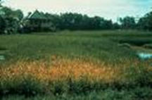
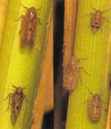

PESTS OF RICE :: Major Pests :: Brown Plant Hopper
3. Brown plant hopper: Nilaparvata lugens (Delphacidae: Hemiptera)
Distribution and status: Orissa, Andhra Pradesh, Tamil Nadu, Karnataka, West Bengal, Maharashtra, Madhya Pradesh, Uttar Pradesh, Haryana and Punjab in India, South East Asia, China, Japan, Korea
Host range: Rice, sugarcane, grasses
 |
Damage symptoms: Nymphs and adults congregate at the base of the plant above the water level and suck the sap from the tillers. The affected plant dries up and gives a scorched appearance called “hopper burn”. Circular patches of drying and lodging of matured plants are typical symptoms caused by this pest. It is the vector of grassy stunt, ragged stunt and wilted stunt diseases. |
 |
Bionomics: The brown plant hopper has a brown body and chestnut brown eyes. Adult measures about 4 - 4.5 mm in length capable of flying a long distance drifting with the wind. Adults are of two forms viz., macropterous (long winged) and brachypterous (short winged). The female makes an incision in the leaf sheath and inserts 200-300 small eggs, egg period -6 days; nymphal period - 15 days and adult longevity 18-20 days. |
Management
- Use resistant varieties like Aruna, Karnataka, Karthika, Krishnaveni, Makon, Abhey, Asha, Divya, Py 3, Co 42, Co 46, PTB 21, Jyoti (PTB 29) and PTB 33, Manasarowar, Bhadra, IET 7575, IET 6315, MTU 1249, R 650 - 1820, Shyraksha, Arvindar, kartik, bharatidasan, neela, uday, sonasali, vajram, chaitanya, nagarrjuna and chandana,
- Avoid close planting and provide 30 cm rogue spacing at every 2.5 m to reduce the pest incidence.
- Avoid use of excessive nitrogenous fertilizers.
- Control irrigation by intermittent draining.
- Set up light traps to monitor and control pest population.
- Release of natural enemies like wolf spider, Lycosa pseudoannulata and green mirid bug Cyrtorrhinus lividipennis.
- Avoid use of insecticides causing resurgence such as synthetic pyrethroids, methyl parathion, fenthion and quinalphos.
- Drain the water before the use of insecticides and direct the spray towards the base of the plants.
- Spray neem seed kernel extract 5% (25 kg/ha) (or) neem oil 2% (10 L/ha).
- Spray imidacloprid 17.8 SL 125 ml or buprofezin 25 SC 325 ml or or acephate 75 SP 625 g or or /ha.
|
|
|
|
|
|
|
|
|
|
|
|